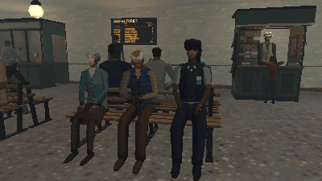

Tutorials › Seat Two NPCs on a Bench and Have Them Talk
How to Seat Two NPCs on a Bench and Have Them Talk in Godot 4
Two people on two seats, talking in turn, their heads turning to each other.

A pair on a bench is the cheapest life a level can have. One script seats two people on two markers, gives them turns to talk (one plays a seated talking clip while the other listens) and turns their heads to each other with a SkeletonModifier3D that runs after the clips, so the turn adds to whatever the clip does: within a limit, at a limited speed, shared between chest, neck and head.
Script: bench_talk.gd (MIT) · Godot 4.3 or newer · its folder on GitHub
How to use it
- Add a
Nodeand attachbench_talk.gd. Setpeopleto two characters (each with an AnimationPlayer that hasSitandSitTalk, and a Skeleton3D with Chest, Neck and Head bones; their front +Z, as a GLB has it). - Set
seatsto two markers (Marker3D) where the feet go, their -Z the way the people face. - Tune
turn(each turn's length, from x to y seconds),max_yaw(degrees) andturn_speed(degrees a second). - Connect
turn_changed(the talker's index) for voices or subtitles.
What it needs
- Godot 4.3 or newer (SkeletonModifier3D; the Compatibility renderer is enough).
- Two rigged characters with a seated clip and a seated talking clip.
Try it free
The PSX Bystanders NPC Pack Free Sampler has the office worker and the young man with every clip, Sit and SitTalk among them, and the station bench: the code works on them as they are.
How it was tested
In Godot 4.3 and 4.7.2, with the free sampler's two people on its station bench: each sits on their seat, the hips on it; one talks while the other listens; both get turns, each within the times set; each head turns to the other, never past max_yaw, never faster than turn_speed.
The code
extends Node
## How to Seat Two NPCs on a Bench and Have Them Talk in Godot 4
## Cordatix Godot 4 PSX tutorials, MIT licensed: https://github.com/GoldenSparrow-Dev/cordatix-godot-psx-tutorials
## The devlog: https://cordatix.itch.io/psx-bystanders-npc-pack/devlog/1766079/how-to-seat-two-npcs-on-a-bench-and-have-them-talk-in-godot-4-psx-bystanders-npc-pack
## Two people side by side on a bench who talk in turn: each sits on its seat (a marker where the feet go, its -Z the
## way they face), plays SitTalk while it speaks and Sit while it listens, and turns its head to the other. Set the two
## people (models with an AnimationPlayer that has Sit and SitTalk, and a Skeleton3D with Chest, Neck and Head bones;
## their front +Z, as a GLB has it) and their two seats. Godot 4.3 or newer.
signal turn_changed(talker: int)
@export var people: Array[Node3D] = []
@export var seats: Array[Node3D] = []
## Seconds one talks before the other answers (at least, at most).
@export var turn := Vector2(3.0, 6.0)
## How far a head turns to the other (degrees, at most) and how fast (degrees a second, at most).
@export var max_yaw := 55.0
@export var turn_speed := 60.0
var talker := 0
var heads: Array = []
var _left := 0.0
func _ready() -> void:
for i in 2:
# on the seat: the feet on the marker, the front (+Z) the way the marker faces (its -Z)
people[i].global_transform = seats[i].global_transform * Transform3D(Basis(Vector3.UP, PI), Vector3.ZERO)
var head := HeadTo.new()
head.target = people[1 - i]
head.max_yaw = max_yaw
head.turn_speed = turn_speed
_skeleton(i).add_child(head)
heads.append(head)
_anim(1).play("Sit")
_anim(1).seek(1.3) # the two out of step with each other
_switch(0)
func _process(delta: float) -> void:
_left -= delta
if _left <= 0.0:
_switch(1 - talker)
func _switch(i: int) -> void:
## i talks and the other listens, until the next turn in turn.x to turn.y seconds.
talker = i
_left = randf_range(turn.x, turn.y)
_anim(i).play("SitTalk", 0.4)
_anim(1 - i).play("Sit", 0.4)
turn_changed.emit(i)
func _anim(i: int) -> AnimationPlayer:
return people[i].find_children("*", "AnimationPlayer", true, false)[0]
func _skeleton(i: int) -> Skeleton3D:
return people[i].find_children("*", "Skeleton3D", true, false)[0]
class HeadTo extends SkeletonModifier3D:
## Turns the chest, the neck and the head to the other one, over whatever clip plays.
var target: Node3D
var max_yaw := 55.0
var turn_speed := 60.0
var bones := [["Chest", 0.15], ["Neck", 0.35], ["Head", 0.5]]
var yaw := 0.0
func _process_modification() -> void:
var sk := get_skeleton()
var head: Transform3D = sk.global_transform * sk.get_bone_global_pose(sk.find_bone("Head"))
# the other one against where this face points in the clip alone, across the floor (left positive); the
# other's place, not its head's pose: reading another skeleton's pose here would pose it again, its turn twice
# a frame
var f := head.basis.z
var to := target.global_position - head.origin
var want := clampf(rad_to_deg(atan2(f.z * to.x - f.x * to.z, f.x * to.x + f.z * to.z)), -max_yaw, max_yaw)
yaw = move_toward(yaw, want, turn_speed * get_process_delta_time())
# each bone turns its share about the vertical through its joint, in its parent's space
var up := (sk.global_transform.basis.inverse() * Vector3.UP).normalized()
for b in bones:
var i := sk.find_bone(String(b[0]))
var parent := sk.get_bone_parent(i)
var axis := up if parent < 0 else (sk.get_bone_global_pose(parent).basis.inverse() * up).normalized()
sk.set_bone_pose_rotation(i, Quaternion(axis, deg_to_rad(yaw * float(b[1]))) * sk.get_bone_pose_rotation(i))
The devlog and the pack
The step-by-step walkthrough is the devlog How to Seat Two NPCs on a Bench and Have Them Talk in Godot 4 (PSX Bystanders NPC Pack 2.0) on itch.io, written for PSX Bystanders NPC Pack, a PS1-style asset pack by Cordatix for Godot 4, Unity, Unreal and Blender.